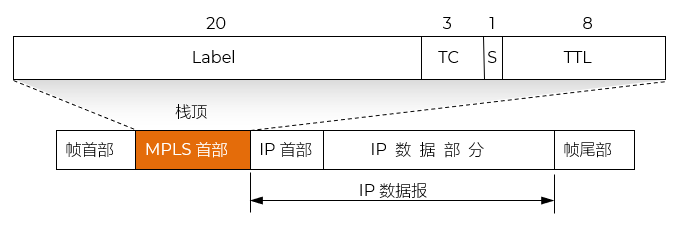
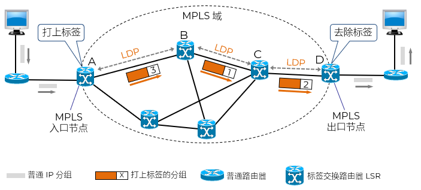

空间换时间的优化策略，也是哈希查找（Hash Lookup）的核心思想
权衡 trade-off：牺牲存储资源，换取执行效率
arrar = [{id:0,title:''},{id:1,title:''},{id:2,title:''}, ... ,{id:1000,title:''}]
空间：仅原始数据
每次查找都会遍历，效率较低；O(n)
可以先用 Map 或 Object 建立索引 - 给数据项打标签
空间：多了一个哈希表，占用额外内存；约多 100 万个指针/引用
属于 集合类（Collection）数据结构，用于存储键值对 key-value pairs
map = {label0：{id:0,title:''}，label1：{id:1,title:''}, ... , label1000：{id:1000,title:''}}
查找时直接根据key获取数据；不需要比较，直接“跳”到目标位置；效率较高；O(1)
快递驿站取件码
电影院座位号
图书索引ISBN
电话通讯录（按拼音首字母索引）
超市储物柜
通过简短标识快速定位复杂对象
JavaScript - Map()、Object()
Java - Map()
Python - dict()

控制逻辑在网络层；实际封装在链路层 - 2.5层协议

| label | port |
|---|---|
| label0 | 1 |
| label1 | 5 |
| label2 | 2 |
| ... | ... |
Label Switching Router
只根据标签进行交换 Swap，不关心 IP 内容；无需解析 IP 头，显著提升转发效率
Label Switched Path
一条从源到目的的单向标签路径